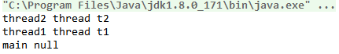

ThreadLocal字面上的意思是局部线程变量，每个线程通过ThreadLocal的get和set方法来访问和修改线程自己独有的变量。简单地说，ThreadLocal的作用就是为每一个线程提供了一个独立的变量副本，每一个线程都可以独立地改变自己的副本，而不会影响其它线程所对应的副本。
ThreadLocal的基本使用
ThreadLocal是一个泛型类，在创建的时候需要指定变量的类型：
1 | private static ThreadLocal<String> threadLocal = new ThreadLocal<>(); |
ThreadLocal提供了set方法来设置变量的值，get方法获取变量的值，remove方法移除变量：
1 | public class ThreadLocalTest { |
程序输出如下： 
我们也可以给ThreadLocal设置初始值，设置初始值有两种方式：
- 重写
initialValue方法：
1 | public class ThreadLocalTest { |
- 使用ThreadLocal的
withInitial方法：
1 | public class ThreadLocalTest { |
值得注意的是remove无法移除初始值：
1 | public class ThreadLocalTest { |
演示多线程间独立
在多个线程中使用ThreadLocal：
1 | public class ThreadLocalTest2 { |
程序输出如下：

结果证明了ThreadLocal在每个线程间是相互独立的，threadLocal在thread1、thread2和main线程间都有一份独立拷贝。
ThreadLocal基本原理
在ThreadLocal类中有一个静态内部类ThreadLocalMap(概念上类似于Map)，用键值对的形式存储每一个线程的变量副本，ThreadLocalMap中元素的key为当前ThreadLocal对象，而value对应线程的变量副本。
我们使用Map来代替ThreadLocalMap，创建一个简易的类ThreadLocal实现：
1 | public class MyThreadLocal<T> { |
使用方式和之前的例子一致：
1 | public class ThreadLocalTest3 { |
程序输出如下：

使用建议
将ThreadLocal变量指定为
private static；使用完毕后显式地调用
remove方法移除。